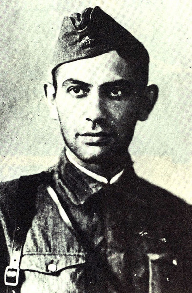

Lev Kopelev

Introduction
Lev Kopelev was born in 1912 to a Jewish family in Kiev. He was an idealistic Communist activist in the 1930s and a propaganda officer in the Red Army during the war. Kopelev spoke out against Red Army atrocities against the German civilian population in the latter stages of the war, for which he was arrested and handed a ten-year sentence to the Gulag. Kopelev was released from the Gulag after Stalin’s death and became an active member of the Soviet human rights movement. His Soviet citizenship was revoked in 1980. Kopelev died in Cologne, Germany in 1997.
Arrest
“They called me over to the Party commission. The vote had gone against me. I had been expelled from the Party for ‘gross political errors, for showing pity for the Germans, for bourgeois humanism, and for harmful statements on questions of current policy.’ My card as candidate member of the Party was taken from me.
Labor
“The thieves in our camp held a secret conclave and, departing from custom, decided to form their own work team. Except for the obstinate Lenya the General and one or two who were really sick, they marched off every morning to the gravel pit. They balked at working in the afternoons (although on sunny days they’d stay on at the pit to sunbathe), yet they fulfilled or overfulfilled their daily quota. This was because of the prodigious work of one of their number, Karapet the Bomber, a short, broad-shouldered Armenian. Good-natured, helpful and always smiling, Karapet actually enjoyed working. With sweat streaming from his bare, muscular, copper-red torso, he would push his heavy-laden wheelbarrow on the run, calling out happily, ‘Make way for the Bomber!’ The other thieves took perverse pride in his records.”
Suffering
“It was unbearably hot and stuffy. We sat on the floor in our underpants. We were all thirsty. The [toilet] bucket could be carried out only when it was full to the brim. There was no shortage of volunteers for the malodorous task: they could stop by a water faucet outside. On the third day there was still no bread. The shouts and wails were louder than ever and the reports of automatic rifle fire more frequent. ‘Shot three of them today,’ said one of the guards who brought us the midday meal. He explained that there was no bread because the bakery had burned down, and they were waiting for bread from another bakery.”
Propaganda
“It was unbearably hot and stuffy. We sat on the floor in our underpants. We were all thirsty. The [toilet] bucket could be carried out only when it was full to the brim. There was no shortage of volunteers for the malodorous task: they could stop by a water faucet outside. On the third day there was still no bread. The shouts and wails were louder than ever and the reports of automatic rifle fire more frequent. ‘Shot three of them today,’ said one of the guards who brought us the midday meal. He explained that there was no bread because the bakery had burned down, and they were waiting for bread from another bakery.”
Solidarity
“The prisoners were served a watery gruel, made of millet and smelling of motor oil, in used tin cans. I couldn’t get it down at first, and ate only the daily portions of bread and sugar. April 9, 1945, was my thirty-third birthday, and that morning our cell boss, the former White Russian Colonel Pyotr Berulya, presented me with a pound of sugar, made up of ten or eleven individual portions. It was a birthday present from my cell mates, and it gave me my first moment of happiness in prison. They, too, were hungry and afraid, yet they did what little they could to provide a bit of human warmth to one of their fellow prisoners.”
Conflict
“In prison we used to be afraid of informers and talked about them in whispers. Here in the camp we spoke of them out loud. The lowest of all the minions of the mighty state, as helpless and humiliated as the rest of us, and often as falsely accused and as unfairly sentenced, they were nevertheless the indispensable cogs of the cruel punitive machine. They served for the sake of the little handouts the machine threw their way, and they served out of fear.”
Guards
“An order: Everyone out. The prison was being moved to keep up with the front. We were packed together in an open truck, with our belongings. Two guards with submachine guns sat on wooden benches on either side of us, and two others, with police dogs, guarded the back. ‘No talking! No squirming about! Any move to get up will be taken as an attempt to escape! The guards will shoot without warning!’ Turning off the highway into a wood, we drove through a gate and stopped before a long, white, two-story structure. We were herded into a large basement room and told to sit down on the floor. Roll call. By surname. In reply, you were supposed to give your first name and patronymic; specify the statute under which you were arrested; state whether you had been sentenced or were awaiting trial; and if sentenced, specify the number of years.”
Survival
“Led one night to be interrogated, I noticed a bookcase against the wall just before we came to a sharp turn of the dimly lit corridor. On the way back to my cell, with my sleepy guard walking behind me, I put on speed just before turning the corner and, without stopping, scooped up as many books as I could, hiding them under my overcoat. I could read during the day. They had not gotten around to making a peephole in the door of our cell, and by the time the guard would turn the key in the lock and slide open the bolt, I would have the book I was reading buried in straw, where the other books were hidden."
Fates
Kopelev was released in January 1947 but after a short freedom was told that his case was to be retried. A few months later he was arrested again. He did have an opportunity to defend himself at his trial but was sentenced to three more years in corrective labor camps with an additional two years loss of civil rights. This sentence was voided as being too lenient. He was re-tried and sentenced to ten years in the camps and then five years loss of civil rights. “I came to understand that my fate was just because I did deserve to be punished – for the many years I had zealously participated in plundering the peasants, worshiping Stalin, lying and deceiving myself in the name of historical necessity. Gradually I lost my awe for those ideas which, in ‘capturing the masses,’ can become ruinous to whole peoples.” After Stalin’s death, Kopelev was finally released from the Gulag.
Item List
Prisoners
- Olga Adamova-Sliozberg
- Nina Pavlova Aminova
- Anna Andreeva
- George Bien
- Aleksandr Borin
- Edward Buca
- Boris Chetverikov
- Alexander Dolgun
- Nina Gagen-Torn
- Eugenia Ginzburg
- Gustav Herling
- Evfrosiniia Kersnovskaia
- Lev Kopelev
- Anna Larina
- Galina Ivanova Levinson
- Alfred Martinovich Mirek
- Margarete Buber Neumann
- John Noble
- Dimitri Panin
- Susanna Pechuro
- Evgeniia Michailovna Peunkova
- Lev Razgon
- Jacques Rossi
- Joseph Scholmer
- Thomas Sgovio
- Danylo Shumuk
- Michael Solomon
- Vladimir Tchernavin
- Alla Tumanova